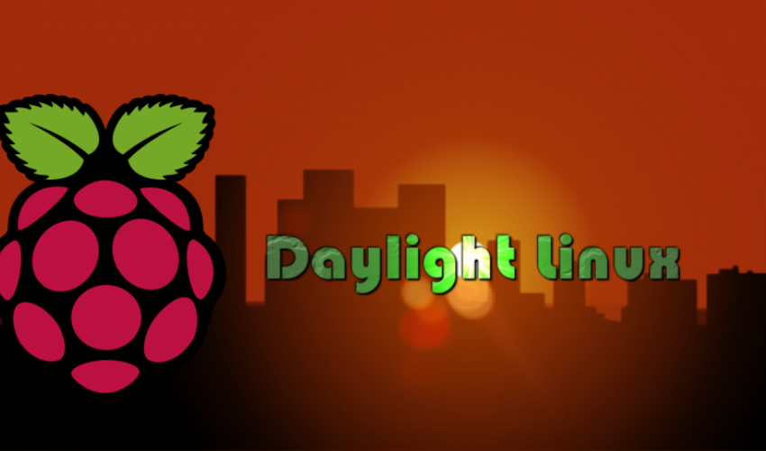

Daylight Linux is a lightweight Debian-based operating system built for Raspberry Pi and 64-bit PCs, using the ultra-light Fluxbox desktop.
Designed around simplicity, low resource usage and direct access to Linux tools. Version 4 targets Raspberry Pi models from Zero through Raspberry Pi 4 and also ships as an AMD64 live system.

Version 4 was built for Raspberry Pi and tested on 3B+, 3B, 3A+ and Raspberry Pi 4.
Boot Daylight Linux on a 64-bit PC from USB and explore the system without a traditional installation.
A familiar Debian base paired with an intentionally minimal graphical environment.